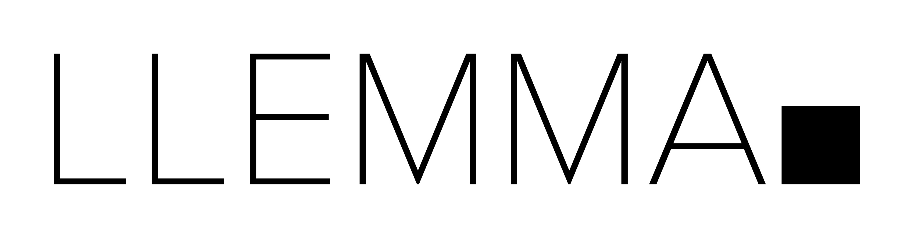
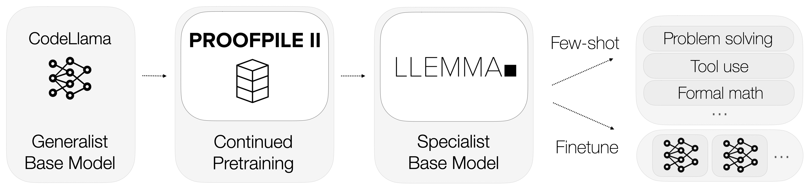
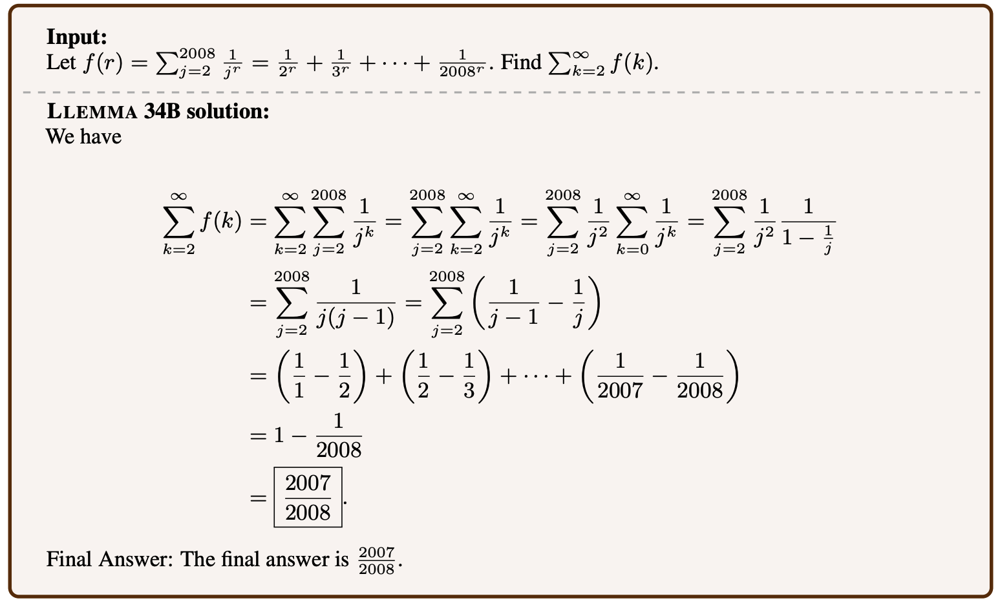
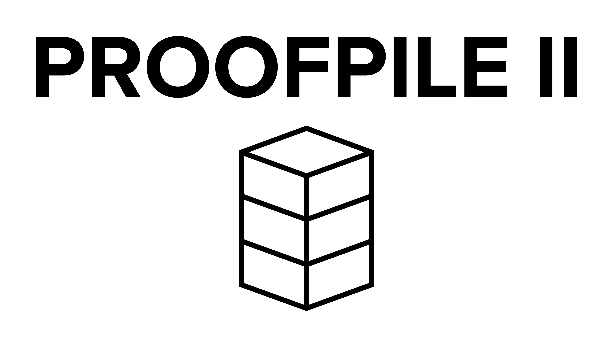
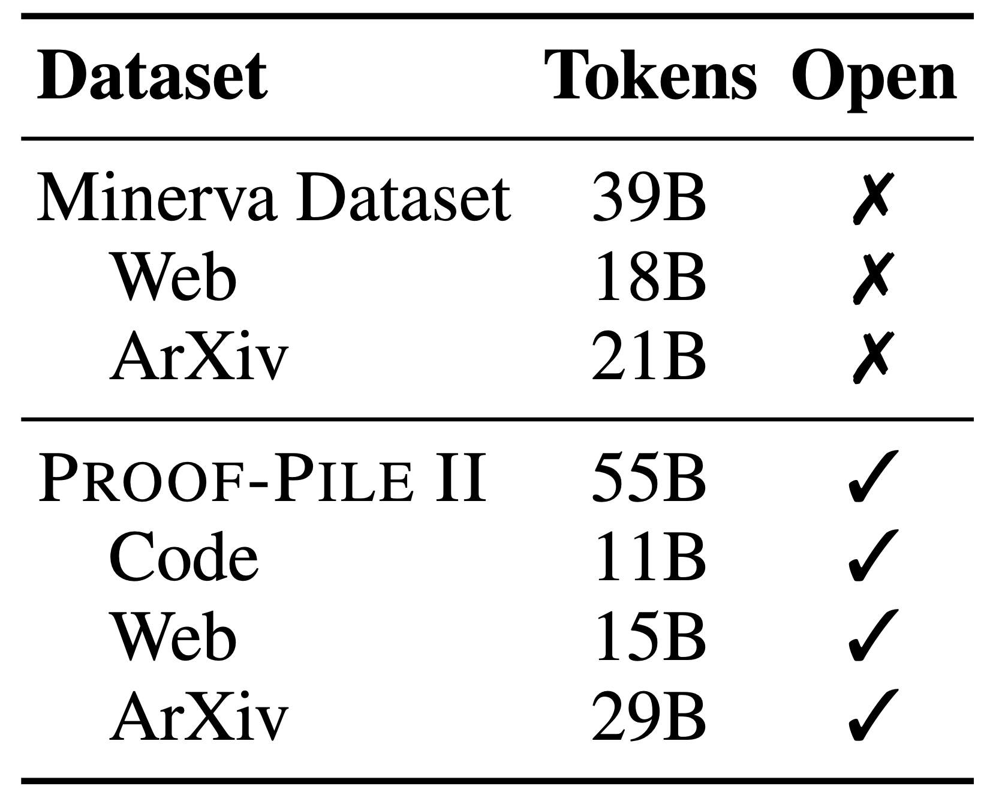
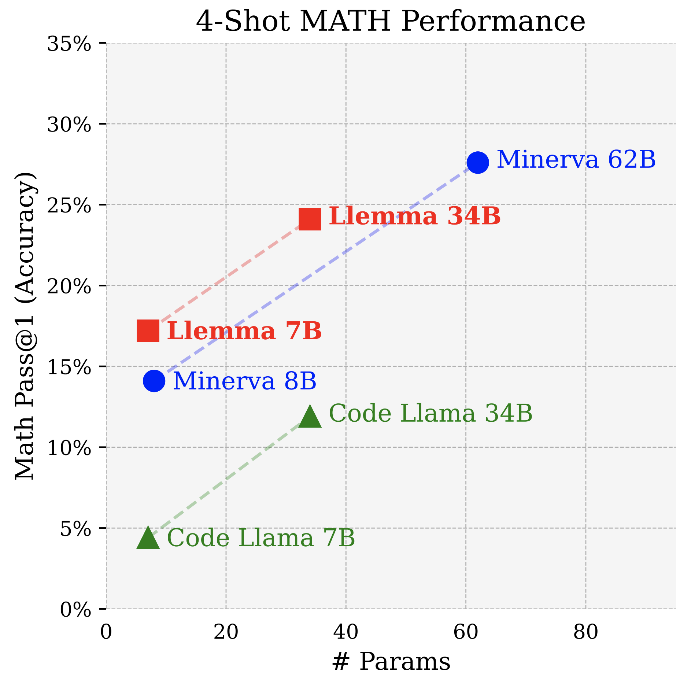
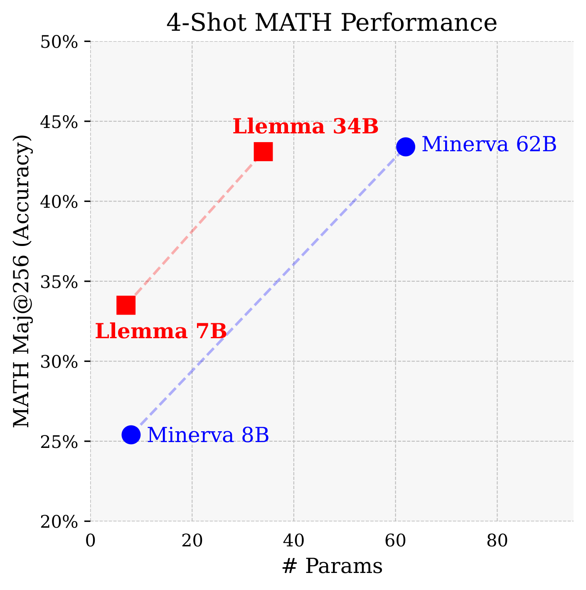
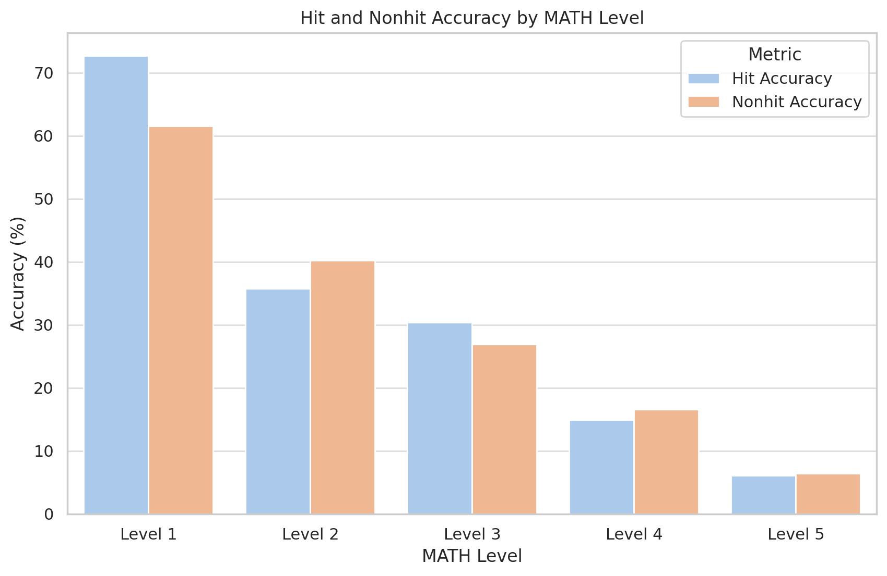

ArXiv | Models | Data | Code | Blog | Sample Explorer
Today we release Llemma: 7 billion and 34 billion parameter language models for mathematics. The Llemma models were initialized with Code Llama weights, then trained on the Proof-Pile II, a 55 billion token dataset of mathematical and scientific documents. The resulting models show improved mathematical capabilities, and can be adapted to various tasks through prompting or additional fine-tuning.

Llemma models show strong performance on benchmarks that test a model's ability to solve mathematical problems without external tools. For example, here is a Llemma 34B solution to a MATH benchmark problem:

Additionally, we found that Llemma models can use computational tools to solve problems, such as calculators, computer algebra systems, and formal theorem provers—more on this below.
Open models, data, and code
Our work parallels Minerva, a model suite specialized for quantitative reasoning developed by Google Research last year. While we don't achieve quite the same scale as Minerva, our Llemma models perform better on an equi-parameter basis. Moreover, we make our models and dataset open-access and our code open-source.
Language models with strong mathematical reasoning capabilities are upstream of a number of emerging research areas, such as reward modeling, algorithmic reasoning, and formal mathematics. We hope that by providing researchers with a much stronger base model for reasoning applications, Llemma will accelerate progress on these problems.
Because scale reliably produces better generalist models, specialized models often have a short shelf life. By making our dataset and code available, we hope that Llemma's training recipe can be reused to improve the mathematical capabilities of future, stronger open models.
Dataset : Proof-Pile II

The first step in developing Llemma was to assemble a large, high-quality dataset of mathematical and scientific content. Minerva used 38 billion unique tokens consisting of arXiv and math web pages. Our dataset, the Proof-Pile II, contains arXiv, web data, and code for a total of 55B unique tokens.
The Proof-Pile II is a successor to the original Proof-Pile, a smaller dataset of mathematics documents.

For the arXiv portion of the Proof-Pile-2, we use the RedPajama arXiv subset. Our web and code subsets, on the other hand, are new. We describe them below.
Web. The OpenWebMath dataset, a recent 14.7 billion token dataset of mathematical web pages, is a sister project to Llemma. OpenWebMath was created by building a complete CommonCrawl processing pipeline, including HTML extraction, classifier-based filtering, and deduplication steps.
Code. The modern mathematician increasingly relies on computational tools, from offloading difficult calculations to programs, to using software to verify proofs. Motivated by these applications, the Proof-Pile-2 includes 11 billion tokens of mathematical code, spanning numerical computing, computer algebra, and formal theorem proving. This training data allows for some interesting evaluations—more on this later.
Training
We trained Llemma 7B for 200B tokens and Llemma 34B for 50B tokens. This amounts to 23,000 A100 hours for Llemma 7B and 47,000 A100 hours for the 34B. Our training stack is built on a number of fantastic open source projects, including GPT-NeoX and FlashAttention-2.
Evaluation
Our first evaluation setting is chain-of-thought mathematical reasoning, measured by benchmarks such as MATH and GSM8k. This is a setting where open source base models have lagged: Llama-2 and Code Llama's MATH scores are in the mid-single digits. Llemma achieves a significant improvement on these tasks, and even surpasses Minerva when controlled for model parameters.

Majority voting provides a further boost for Llemma, with Llemma 34B's MATH maj@256 score almost matching Minerva 62B.

The code subset of the Proof-Pile-2 endows Llemma with capabilities Minerva lacks without additional finetuning. In this blog post, we'll discuss formal theorem proving. Our paper contains additional results on a Python-aided problem solving task.
Formal theorem proving consists of writing a machine-checkable proof in a language such as Lean or Isabelle. Evaluating the theorem proving abilities of language models by manually checking LaTeX proofs is completely unscalable. In contrast, formal proofs come with an automatic and infallible correctness judgement.
Up until now, machine learning approaches to formal theorem proving have either relied on models finetuned for a specific language, or proprietary models such as GPT-4. To our knowledge, Llemma is the first demonstration of in-context theorem proving by an open base model. Our results on the standard miniF2F benchmark surpass GPT-4 based approaches and are comparable to finetuned models.
| Method | miniF2F test |
|---|---|
| ReProver (finetuned) | 26.50% |
| Copra (GPT-4 based) | 23.36% |
| Code Llama 7b | 20.49% |
| Code Llama 34b | 22.13% |
| Llemma-7b | 26.23% |
| LLemma-34b | 25.82% |
Memorization
Language model evaluations are partly a memorization test and partly a generalization test, but it is often unclear in what proportion. We seek to quantify the degree to which our evaluations are explained by memorization by looking for MATH reference solutions in our training set. Surprisingly, Llemma doesn't perform any better on MATH problems that are contained in its training set. In the table below, a "hit" denotes a 30-gram overlap betweeen an MATH reference and the training set.

We open-source the tools we used for our analysis, and encourage other researchers to investigate other ways to detect and quantify the effects of memorization.
Future directions
Llemma is a pretrained base model; therefore, our evaluations are only a starting point for further research into the mathematical abilities of language models. To conclude, we note a few promising directions that Llemma might enable.
Reward modeling and reinforcement learning. Recent work by OpenAI demonstrates the effectiveness of guiding mathematical problem solving with a reward model. How can we improve upon this approach?
Formal theorem proving. Our in-context learning evaluations are minimal working examples of formal theorem proving with Llemma. What is possible with some finetuning and better algorithms? Can Llemma models tackle the IMO Grand Challenge?
Algorithmic Reasoning. With very careful prompting, language models can learn to execute algorithms. What would it take to elicit algorithmic reasoning from Llemma more flexibly and reliably?
Citation
To cite Llemma or our accompanying codebases, please cite the following papers:
@misc{azerbayev2023llemma,
title={Llemma: An Open Language Model For Mathematics},
author={Zhangir Azerbayev and Hailey Schoelkopf and Keiran Paster and Marco Dos Santos and Stephen McAleer and Albert Q. Jiang and Jia Deng and Stella Biderman and Sean Welleck},
year={2023},
eprint={2310.10631},
archivePrefix={arXiv},
primaryClass={cs.CL}
}
@misc{paster2023openwebmath,
title={OpenWebMath: An Open Dataset of High-Quality Mathematical Web Text},
author={Keiran Paster and Marco Dos Santos and Zhangir Azerbayev and Jimmy Ba},
year={2023},
eprint={2310.06786},
archivePrefix={arXiv},
primaryClass={cs.AI}
}